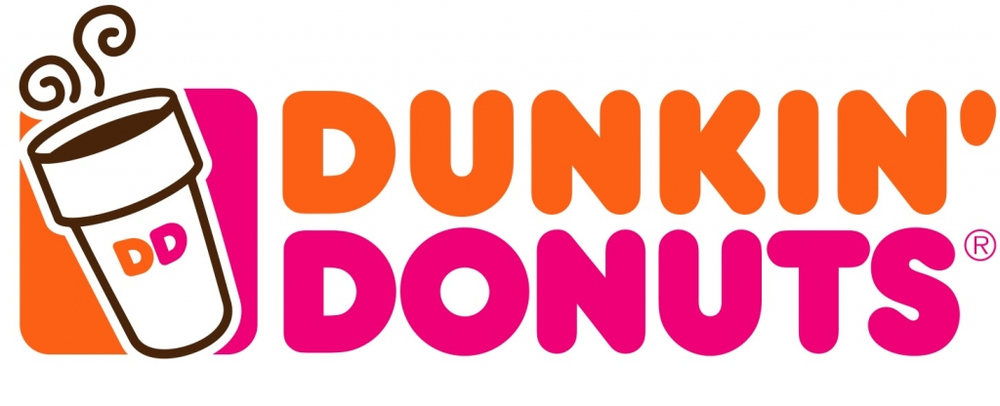

Marketing: History of the Logo
-

A script version of the words Dunkin' Donuts was filed on March 31, 1955, and registered on February 2, 1960.
-

A later logo was for a drawing and word logo depicting a figure with a donut for a head and a coffee cup and donut body wearing a garrison cap, with Dunkin' emblazoned on both the coffee cup and cap.
-
In 1961, the company began using a hot pink color for its branding and used a logo showing a stylized coffee cup with the company's name rendered on one line as a circle, evoking a donut dunking into the cup. In 1980 bright orange was added to the hot pink.
-

As of 2014 the logo was a variation of the logo that has been in use since about 1980: an all-capitals rendering of the words Dunkin' Donuts (Dunkin' in orange; Donuts in pink) in a thick, Frankfurter typeface with a coffee cup outlined in brown with a "DD" monogram.
In September 2018, the company announced that it would shorten its name to Dunkin', with a wider roll-out beginning in January 2019. The company acknowledged that "Dunkin'" was already a common shorthand name for the chain among customers and in its marketing (including the slogan "America Runs on Dunkin'"), and that the rebranding would reflect the chain's continuing shift towards being a "beverage-led" brand at a time when consumers have shown a preference for healthier trends and options as they consume fewer donuts. While stores in the U.S. started using the new name in 2019, the company intends to roll out the rebranding to all of its international stores eventually.